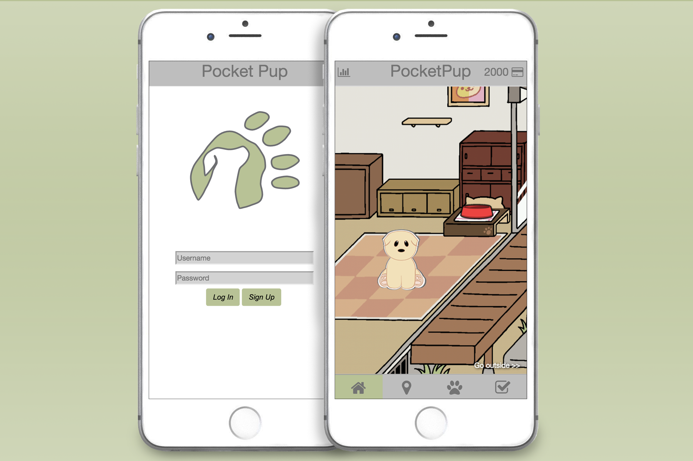
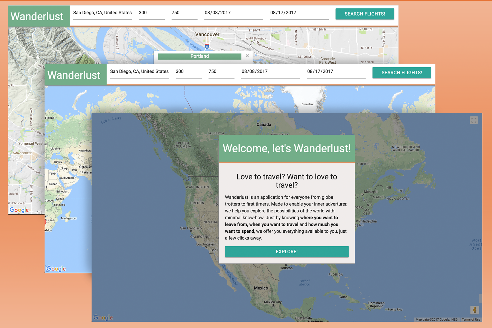
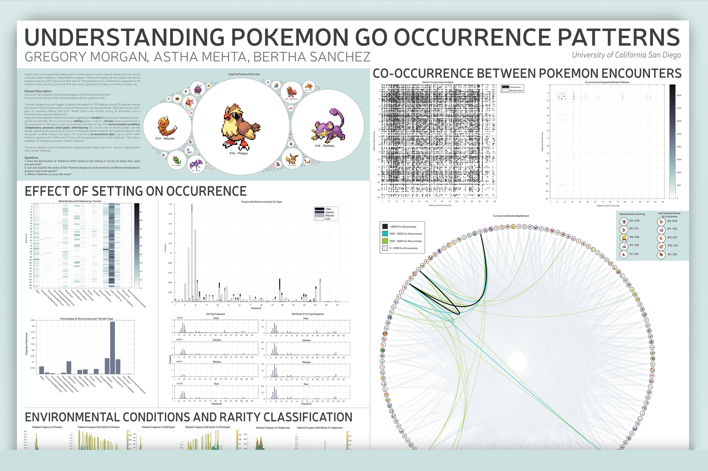

Pocket Pup
Front End and Full Stack Web Development
Web app used to help better prepare and train dog owners through simulating situations based on their own pet’s needs.
View on Github
All credit for the background art to Neko Atsume.

Wanderlust
Front End Development
Web app designed to simplify the travel planning experience through the implementation of explicit user expectations, minimal inputs, and an emphasis on contextual information.
View on Github

Understanding Pokemon Go Occurrence Patterns
Analysis and Data Visualization
Ran analysis on a data set of Pokemon Go occurrence events containing over 300k data points. Developed visualizations for research presentation for peer reviews.
View as PDF
I take no credit for the pixel art used.

Architectural Portfolio
Graphic Design
Selected works from my time studying architecture.
View on Issuu